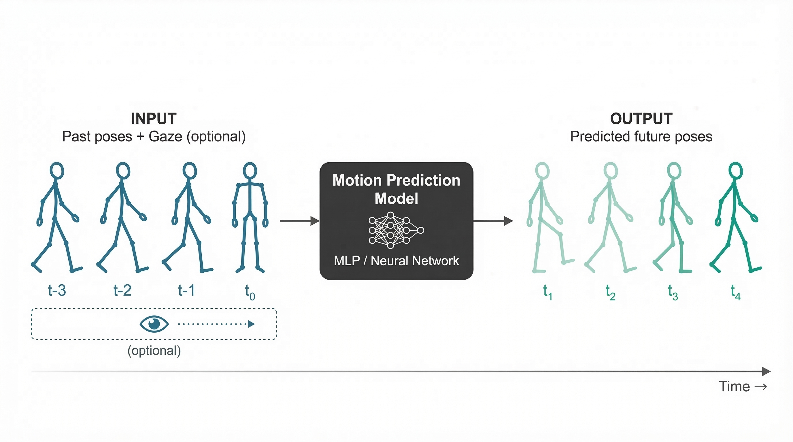

The Problem
As robots become more common in factories, warehouses, and hospitals, they need to work safely alongside people. To do this, robots must predict where humans will move next — whether someone is reaching for a tool, walking across a room, or picking up an object.
Current systems that predict human movement are either too slow for real-time use or require expensive, powerful computers. This limits their use in practical settings like manufacturing floors, assistive devices, and self-driving vehicles where split-second decisions matter.
Our Solution
We developed a simple, lightweight AI system that predicts human body movement up to one second into the future. Unlike existing approaches that use complex, resource-heavy designs, our method uses a streamlined architecture that runs efficiently on standard hardware.
The system analyzes a person's recent movements — tracking 21 body joints over the past 1.7 seconds — to forecast where they'll be next. It can also incorporate eye gaze data, since people typically look where they're about to move.
Key Outcomes
- 9% More Accurate: Our system predicts human movement more precisely than the previous best method (69.1mm vs 75.9mm average error)
- 9× Lighter: Uses only 0.20 million parameters compared to 1.86 million — making it practical for real-world deployment
- Real-Time Ready: The lightweight design enables use on mobile robots, wearable devices, and embedded systems with limited computing power
- Validated Across People: Tested on 6 different individuals performing real tasks, proving it works for different body types and movement styles
Applications
This research can be applied in several areas:
- Manufacturing & Warehouses: Robots can anticipate worker movements to avoid collisions and coordinate tasks smoothly, improving both safety and efficiency
- Healthcare & Assistive Robotics: Mobility aids and rehabilitation robots can better support patients by predicting their intended movements and providing timely assistance
- Autonomous Vehicles: Self-driving cars and delivery robots can better predict pedestrian paths, enabling safer navigation in crowded environments
Gallery